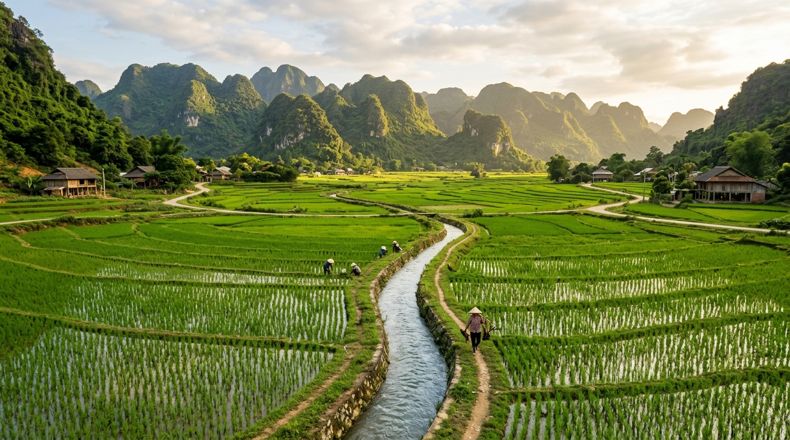
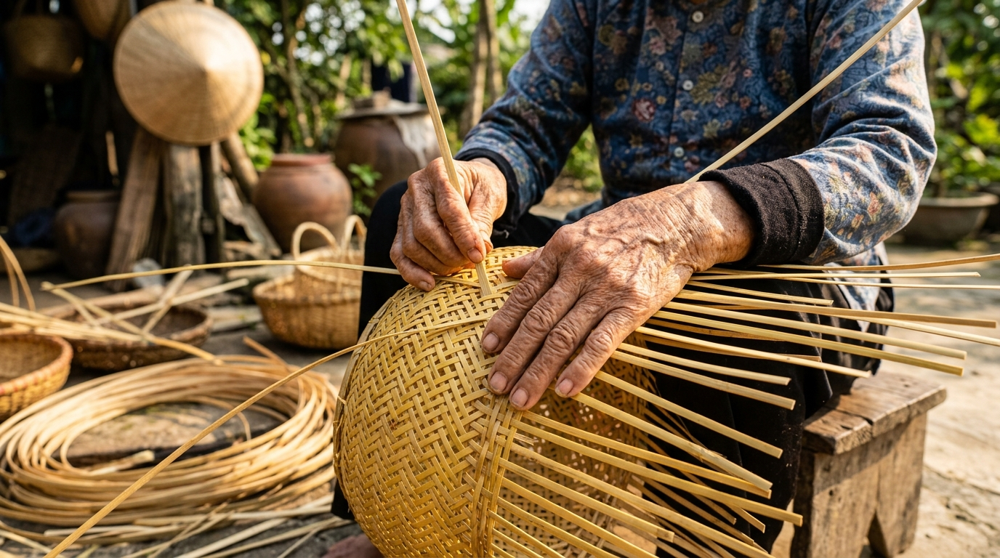
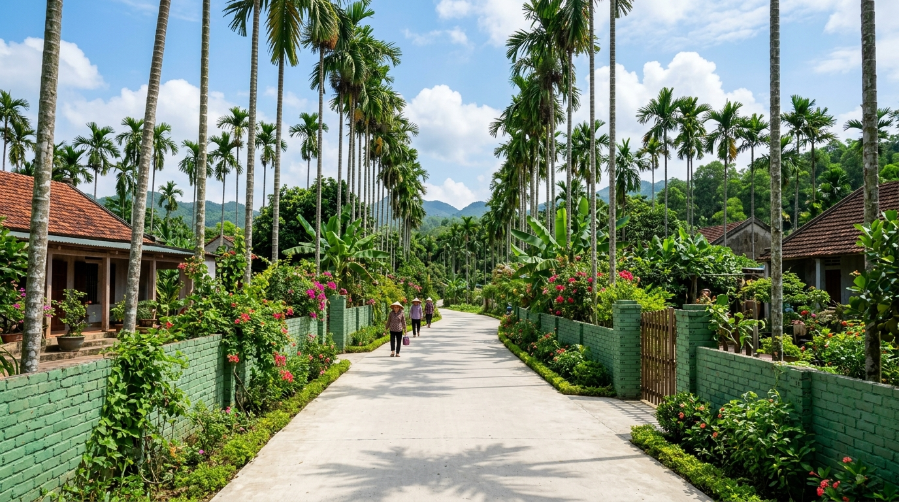

Xã Xuân Phú – Thành phố Đà Nẵng
THÔN HÒA PHÚ
MẠCH NGUỒN TRUYỀN THỐNG
“Hội tụ truyền thống, chung sức tương lai”
Bắt đầu tham quanHội Tụ & Tiếp Nối
Câu chuyện hình thành thôn Hòa Phú
HÒA MỸ
Nông nghiệp & Nghề truyền thống
PHÚ LỘC
Sức dân & Đồng thuận xây dựng
THÔN HÒA PHÚ
Thành lập ngày 29/06/2026
Hòa Phú là một đơn vị dân cư mới về tổ chức hành chính, nhưng không phải là một vùng đất mới về lịch sử. Phía sau tên gọi Hòa Phú là lịch sử của hai cộng đồng dân cư Hòa Mỹ và Phú Lộc – hai vùng đất đã cùng trải qua những năm tháng chiến tranh, cùng lao động sản xuất, cùng xây dựng quê hương và cùng hình thành nên những giá trị văn hóa, cách mạng, nghĩa tình được trao truyền qua nhiều thế hệ.
“Tên gọi mới không xóa đi ký ức cũ. Ngược lại, Hòa Phú là sự hội tụ, kế thừa và phát huy những giá trị tốt đẹp mà các thế hệ Hòa Mỹ và Phú Lộc đã vun đắp.”
Hòa Phú Trong Những Con Số
Tuyến giao thông chính: ĐH01QS, ĐH14 và hệ thống đường bê tông nông thôn rộng khắp.
Thủy lợi: Kênh mương Phú Ninh cung cấp mạch nước tưới mát ruộng đồng.
Dòng Chảy Lịch Sử
Các mốc son hình thành cộng đồng dân cư
Không gian Quế Sơn - Quế Xuân
Nằm trong vùng đất lịch sử lâu đời xứ Quảng, nơi cộng đồng dân cư đã gắn bó chặt chẽ với đất đai, làng xóm và dòng họ qua nhiều thế hệ.
Thôn Hòa Mỹ
Vùng đất giàu truyền thống cách mạng và phong trào đoàn thể, nổi bật với nghề làm nông nghiệp kết hợp tiểu thủ công nghiệp mây tre đan đặc trưng.
Thôn Phú Lộc
Cộng đồng cần cù, nổi tiếng với phong trào xây dựng nông thôn mới, hiến đất mở đường kiến tạo hạ tầng giao thông hiện đại.
Thành lập Thôn Hòa Phú
Theo Nghị quyết số 25/NQ-HĐND của HĐND xã Xuân Phú, sáp nhập toàn bộ diện tích và quy mô hộ dân của Hòa Mỹ và Phú Lộc để mở ra chặng đường phát triển mới.
Ký Ức & Tri Ân
Đạo lý "Uống nước nhớ nguồn"
Trong các cuộc kháng chiến giải phóng dân tộc, nhiều người con của quê hương đã lên đường tham gia cách mạng, chiến đấu kiên cường. Sự hy sinh của các anh hùng liệt sĩ, công lao thầm lặng của các Mẹ Việt Nam Anh hùng và sự mất mát của các gia đình chính sách là một phần không thể tách rời trong trang sử của Hòa Phú hôm nay.
Mảnh Đất Cách Mạng
Khu vực Hòa Mỹ từng là địa bàn gắn với các hoạt động kháng chiến chống ngoại xâm oanh liệt. Tiêu biểu là tấm gương hy sinh của liệt sĩ Lê Quang Vinh ngày 10/11/1974 khi đang làm nhiệm vụ vận tải phục vụ chiến trường tại khu vực Cấm Hòa Mỹ.
Sự Hy Sinh Thầm Lặng
Quế Xuân 2 cũ có truyền thống tri ân sâu sắc, từng tổ chức trao quà và hỗ trợ xây mới, sửa chữa 168 căn nhà cho gia đình chính sách, chăm lo chu đáo cho các Mẹ Việt Nam Anh hùng.
Đất & Người Hòa Phú
Bốn Không Gian Sinh Kế
Mô hình sản xuất nông - lâm - tiểu thủ công nghiệp đặc trưng
RUỘNG
Đất lúa, ngô và hoa màu màu mỡ bên dòng thủy lợi Phú Ninh, ứng dụng cơ giới hóa đạt hiệu quả năng suất cao.
VƯỜN
Các khu vườn kinh tế hộ gia đình tiêu biểu như mô hình trồng cau, ổi kết hợp nuôi cá chất lượng.
RỪNG
Không gian rừng lâm nghiệp giúp phủ xanh đồi trọc, điều hòa khí hậu và mang lại giá trị lâm sinh bền vững.
NGHỀ
Nghề mây tre đan truyền thống được gìn giữ và phát triển bởi bàn tay tài hoa của các tổ hợp tác phụ nữ nông thôn.
Mô Hình Kinh Tế Tiêu Biểu
Nghề Mây Tre Đan Hòa Mỹ
“Nghề thủ công – sinh kế – bản sắc của Hòa Mỹ trong lòng Hòa Phú.”
Được thành lập từ các lớp đào tạo nghề phụ nữ nông thôn, Tổ hợp tác mây tre đan Hòa Mỹ Tây đã giúp hàng chục hội viên phát triển tay nghề, sản xuất ra các sản phẩm thủ công tinh xảo như bàn, ghế, đèn, giỏ cắm hoa. Sản phẩm mây tre đan tự hào được giới thiệu tại các hội chợ quảng bá nông nghiệp sạch và OCOP.
Vườn Cau – Ổi – Nuôi cá
Khai thác hiệu quả quỹ đất vườn kết hợp trồng trọt và nuôi thủy sản, nâng cao thu nhập trên cùng diện tích canh tác.
Nuôi Ếch Thương Phẩm
Chuyển đổi vật nuôi mới mang lại hiệu quả kinh tế cao, tạo luồng gió mới cho kinh tế hộ gia đình.
Nuôi Dúi Hướng Đi Mới
Phương thức chăn nuôi đặc sản, đa dạng hóa sinh kế gia đình, chủ động tiếp cận thị trường tiêu thụ hiện đại.
Sức Dân Là Nền Tảng
“Đường rộng từ lòng dân”
Một trong những tài sản quý giá nhất Hòa Phú kế thừa chính là sự đồng lòng và tinh thần sẵn sàng đóng góp của nhân dân cho lợi ích chung.
PHONG TRÀO “BA SẴN SÀNG”
Sẵn sàng hiến đất • Sẵn sàng tháo dỡ vật kiến trúc • Sẵn sàng đóng góp công sức, tiền của
Văn Hóa – Nghĩa Tình – Đoàn Kết
Tình làng nghĩa xóm
Tinh thần tương thân tương ái, giúp đỡ nhau khi khó khăn hoạn nạn, tối lửa tắt đèn có nhau.
Đền ơn đáp nghĩa
Kính trọng người cao tuổi, quan tâm và chăm sóc chu đáo đến đời sống các gia đình chính sách, người có công.
Đời sống tinh thần
Phong trào thể thao bóng đá sôi nổi, các hội thao giao lưu văn nghệ tại các sân vận động lớn và nhà văn hóa thôn.
4 Trụ Cột Giá Trị
TRUYỀN THỐNG
Ký ức cách mạng, đền ơn đáp nghĩa, gìn giữ nguồn cội và lòng tự hào quê hương.
CỘNG ĐỒNG
Đoàn kết sáp nhập, hiến đất xây đường, đồng thuận cùng kiến tạo không gian sống tốt đẹp.
SINH KẾ
Phát triển hài hòa bốn không gian nông - lâm - chăn nuôi và giữ lửa nghề mây tre đan.
TƯƠNG LAI
Hoàn thiện hạ tầng nông thôn mới nâng cao, áp dụng công nghệ và chuyển đổi số.
Hòa Phú Tương Lai
Tầm nhìn xây dựng cộng đồng dân cư hiện đại
Hòa Phú hôm nay đứng trên nền tảng vững chắc của lịch sử và nghĩa tình để không ngừng vươn mình, kiến tạo một tương lai tốt đẹp hơn cho thế hệ mai sau.
“Gìn giữ ký ức – Tri ân quá khứ – Gắn kết hiện tại – Kiến tạo tương lai”
Thư Viện Ảnh
Hình ảnh tư liệu và hoạt động phong trào tại Hòa Phú

Sản xuất nông nghiệp trên cánh đồng quê hương

Gìn giữ nghề mây tre đan truyền thống Hòa Mỹ

Tuyến đường ĐH14 được mở rộng khang trang từ lòng dân
Nguồn Tư Liệu & Ghi Chú
Nội dung website được biên soạn dựa trên thông tin chính thức từ Hồ sơ giới thiệu thôn Hòa Phú ban hành kèm theo Nghị quyết số 25/NQ-HĐND ngày 29/6/2026 của HĐND xã Xuân Phú.
Ghi chú lịch sử:
• Dốc Tầng thuộc khu vực Phú Bình cũ, nay thuộc thôn Quế Xuân, không phải thành tố lịch sử/địa danh của thôn Hòa Phú.
• Danh sách liệt sĩ, thương binh và gia đình có công hiện được quản lý tập trung theo cơ sở dữ liệu chính sách của xã, không thuộc phạm vi công bố danh sách riêng của thôn.
Thông Tin Liên Hệ
Mọi đóng góp ý kiến hoặc phản hồi xin vui lòng liên hệ:
Ban Nhân dân Thôn Hòa Phú
Xã Xuân Phú, Thành phố Đà Nẵng